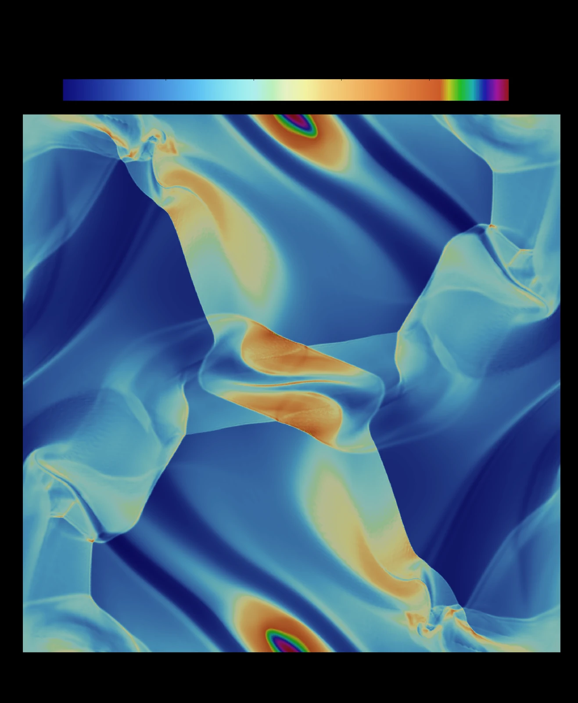
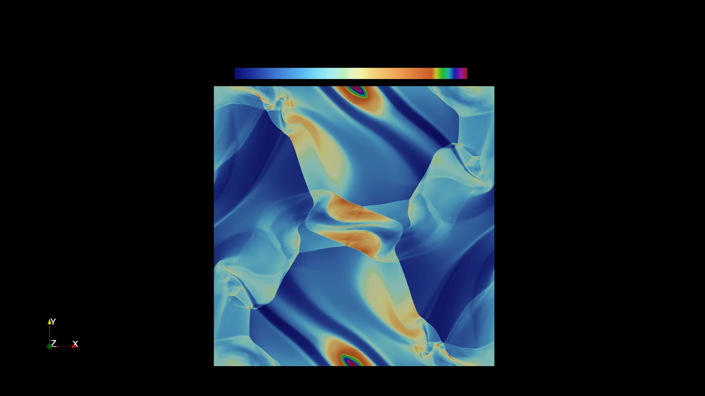
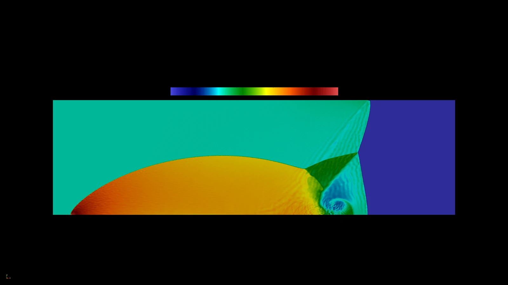
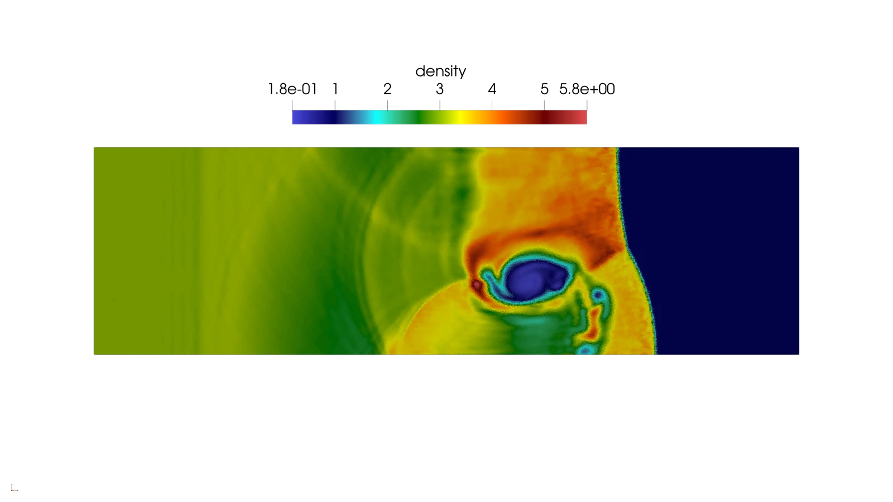
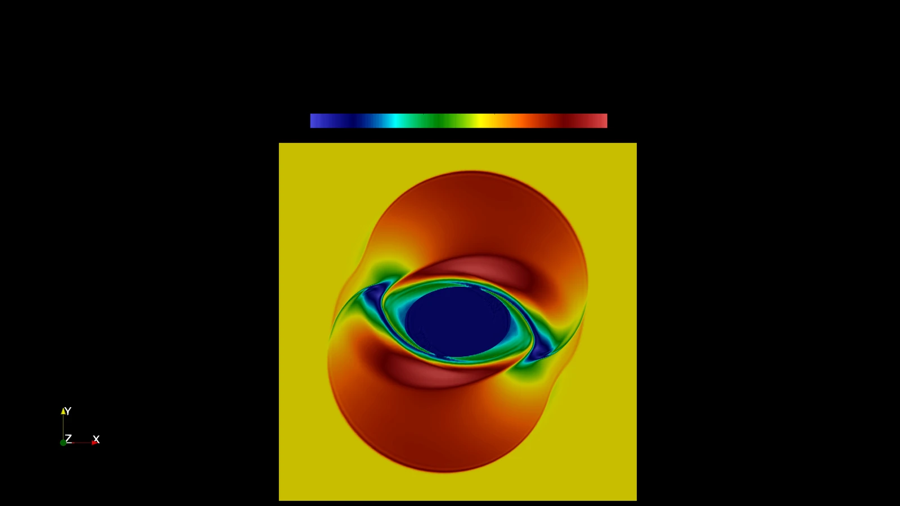
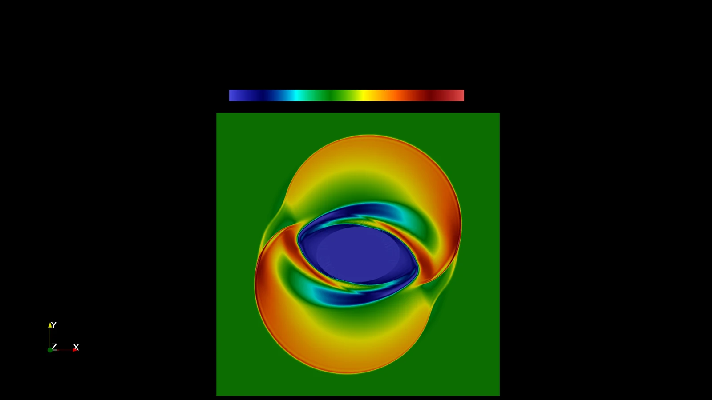

Fluidodinamica
Forward-Facing Step
Un flusso comprimibile incontra un gradino nel canale. Nel video si vede come le onde d’urto si formano e si riflettono lungo le pareti.

Sapienza Università di Roma
Sono dottorando in Modelli matematici per l’ingegneria, elettromagnetismo e nanoscienze.
Mi sono laureato in Matematica applicata e Data Science. Nella tesi magistrale ho sviluppato un metodo numerico per simulare fluidi comprimibili e plasmi.

Second order Discontinuous Galerkin method for two-dimensional hyperbolic systems
Ho implementato e validato in C un metodo Discontinuous Galerkin del secondo ordine per studiare sistemi iperbolici bidimensionali in presenza di urti e discontinuità.
Il metodo numericoFluidodinamica
Un flusso comprimibile incontra un gradino nel canale. Nel video si vede come le onde d’urto si formano e si riflettono lungo le pareti.
Magnetoidrodinamica
L’evoluzione del vortice mostra le strutture che si formano quando il moto del fluido interagisce con il campo magnetico in due dimensioni.

Nei casi DM e SB, le mappe mostrano i fronti e le strutture che si formano nelle loro vicinanze.


Nei casi RMF e RP, le variazioni del campo disegnano strutture ad anello attorno alla regione centrale.

